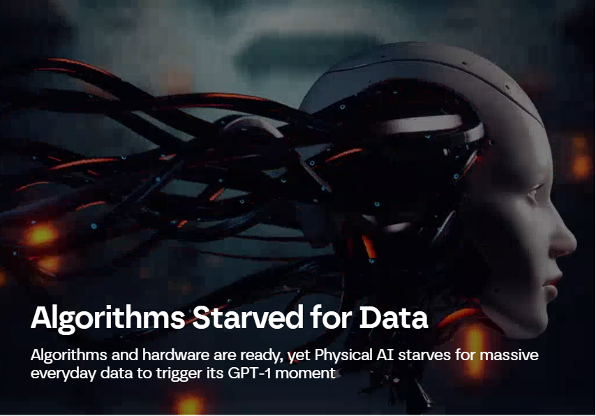
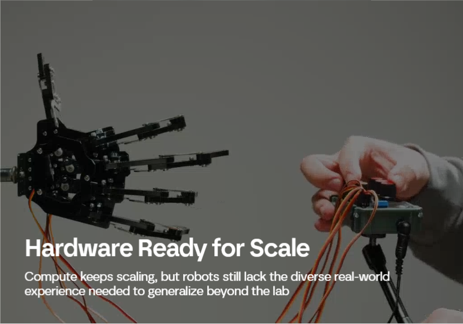
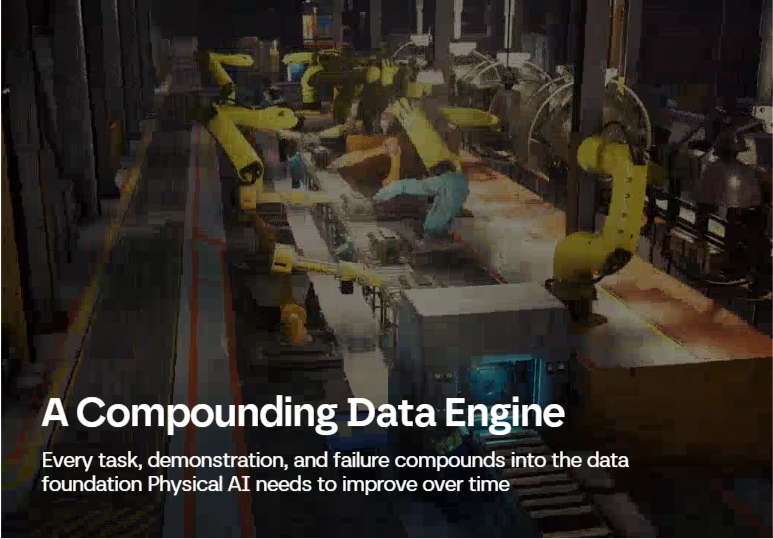
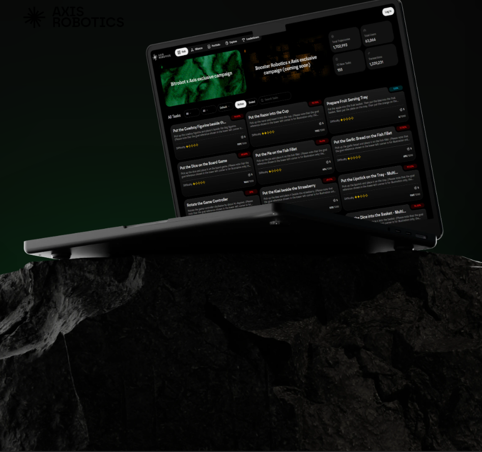
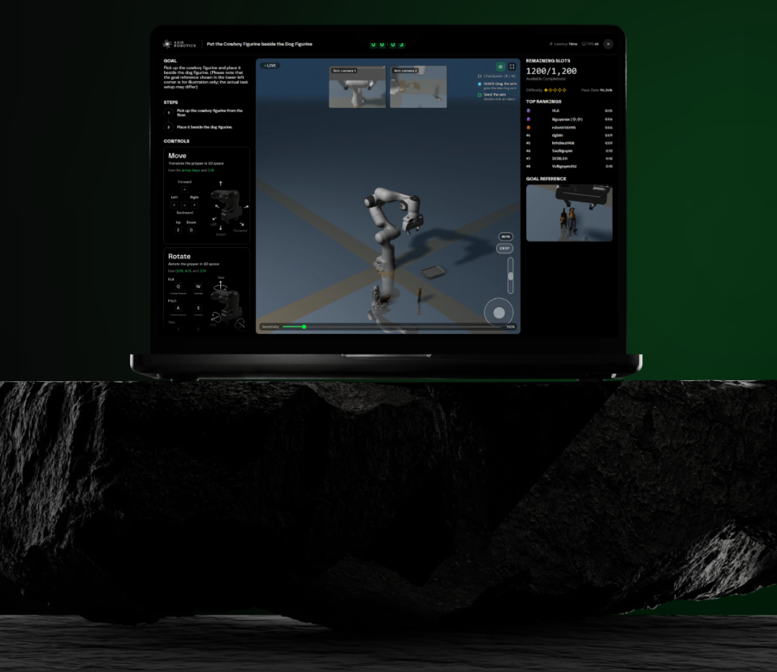
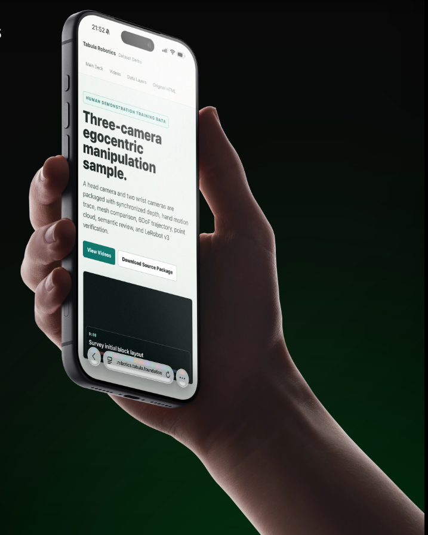
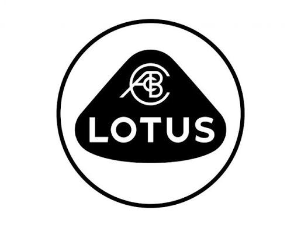

We are building the world's largest scalable data infrastructure for robotics. Powered by a decentralized network of 100K+ contributors, compounding data diversity at foundation-model scale
The Compounding Data
Engine for Physical AI
Launch App
The Bottleneck is
DATA
Not Hardware
Menu
1/3


We don't just deliver static datasets. We operate an organic, self-growing infinity loop
A living system that
compounds over time
Task Generation
Procedural generation of diverse environments
Data Collection
Global human network providing demonstrations
Optimization
Mining failures to generate new targeted tasks
Model Training
Automated evaluation to diagnose data quality
An inherently
open ecosystem
Our true power lies in openness. We embrace agnostic infrastructures, a massive global workforce, and heterogeneous multi-modal data. Through our universal data middleware, we process this raw ecosystem scale into high-fidelity substrates ready to power any robotic embodiment.
Infra
Agnostic simulators & hardware
Workforce
100K+ global human network
Data
Heterogeneous multi-modal sources
Product screen
Products
1/4

Task Generation Engine
We don't leave diversity to chance—we engineer it axis by axis. By multiplying embodiments, object, spatial, semantic, and visual dimensions, we generate exponentially growing data at scale in a highly cost-effective way
View Details
Sim Data Collection Platform
Shifting data collection from legacy offline, sequential methods to an online, fleet-wide, massively parallel human-in-the-loop engine. By eliminating entry barriers, we leverage a global user base to drive generation at 10x the efficiency
View Details
Automated Evaluation Engine
Every model checkpoint is stress-tested against a growing suite of tasks. Automated evaluation surfaces failure modes in minutes, not weeks, feeding directly back into targeted data generation
View DetailsData-Processing Pipeline
Shifting from raw data accumulation to model-centric data engineering. Equipped with a rich toolset, our pipeline processes diverse inputs into on-demand, model-training-ready formats, delivering a 10x+ improvement in data quality
View Details
